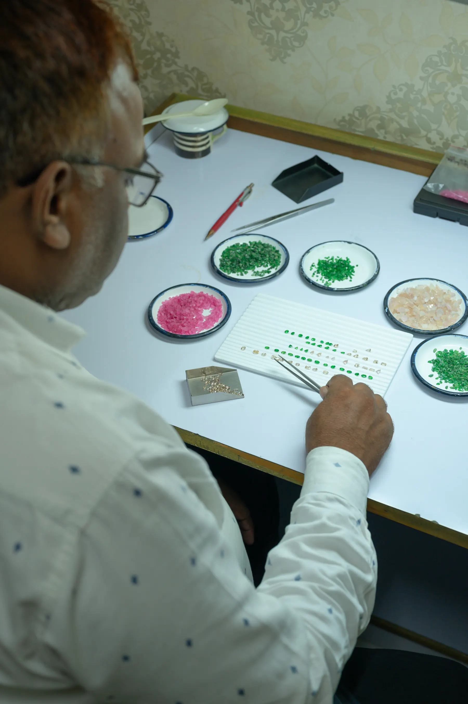
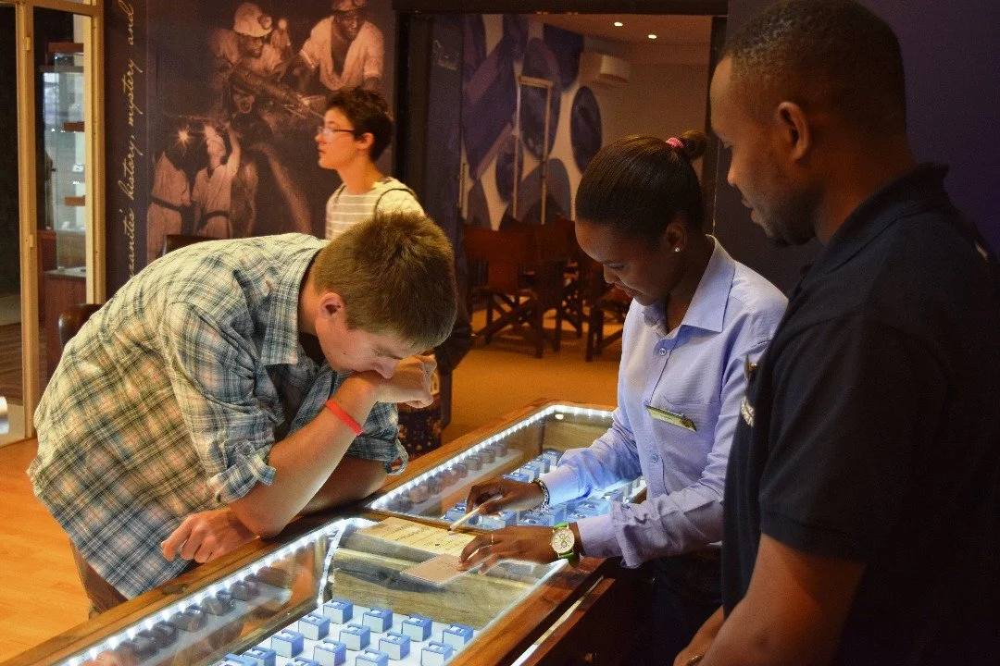

Chosen where it is mined
We are a coloured-gemstone house. Our stones are chosen in Tanzania, where they come out of the ground, rather than bought further down the line.
Tanzanite is found in one place on earth, a few square kilometres at the foot of Kilimanjaro. Around it lies the East African belt that also gives us spinel, tsavorite, rhodolite and Malaya garnet.
The stones we work with
Cut in our own workshop
The stones are cut in the house's own workshop and every piece is finished by hand. High Jewellery is counted in hours at the bench: 2,100 for Celestine, 2,600 for Samaah, and more than 3,700 for Flamenco.
How each piece came to be High Jewellery
One of a kind, each built around a single stone, and quoted privately.
High Jewellery
One of a kind, each built around a single stone, and quoted privately.
 Fine Jewellery
Collections made to be worn often, in the same stones.
Fine Jewellery
Collections made to be worn often, in the same stones.
Ateliers in Dubai, Jaipur and Arusha
The pieces are shown in private at our ateliers in Dubai, Jaipur and Arusha, and in stores across Tanzania's parks and lodges. We also travel with them to exhibitions through the year.
